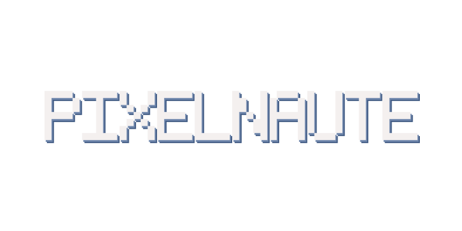

<!doctype html>
<html lang="fr">
<meta charset="utf-8">
<meta name="viewport" content="width=device-width, initial-scale=1">
<title>Pixelnaute — bannière 3D</title>
<style>
  * { box-sizing: border-box; }
  body {
    min-height: 100vh;
    margin: 0;
    display: grid;
    place-items: center;
    background: #10131a;
    color: #dce7f5;
    font-family: system-ui, sans-serif;
  }
  main { width: min(92vw, 1024px); }
  .banner {
    display: grid;
    place-items: center;
    width: 100%;
    aspect-ratio: 2 / 1;
    overflow: hidden;
    perspective: 700px;
  }
  img {
    display: block;
    width: 100%;
    height: auto;
    transform-style: preserve-3d;
    backface-visibility: visible;
    animation: turn 8s linear infinite;
  }
  p { margin: 14px 0 0; color: #a9bcd8; text-align: center; font-size: 14px; }
  @keyframes turn {
    from { transform: rotateY(0deg) scale(.58); }
    to { transform: rotateY(360deg) scale(.58); }
  }
  @media (prefers-reduced-motion: reduce) {
    img { animation: none; transform: rotateY(-12deg) scale(.58); }
  }
</style>
<main>
  <div class="banner" role="img" aria-label="PIXELNAUTE, lettres 3D tournantes sans panneau de fond">
    
  </div>
  <p>Aperçu indicatif — le CIA utilise un vrai modèle 3D animé, sans panneau de fond.</p>
</main>
</html>
